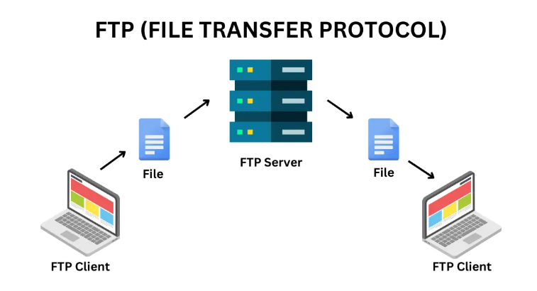

DNS Page｜
ExtranetPage｜
FTP Page｜
HTML Page｜
HTTP Page｜
Web Servers Page｜
World Wide Web Page｜
Web Browsers Page｜
Intranet Page｜
URL Page｜
Multitier Architecture Page｜
TCP/IP Page｜
Web Versions Page
FTP
File Transfer Protocol (FTP) is a standard network protocol used for transferring files between a client and a server
on a computer network. It is one of the most common protocols for uploading and downloading files from a web server.
- FTP-no encryption,plain text
- SFTP-FTP over SSH fully encrypted
- FTPS-FTP with SSL/TLS encryption

- Uses of FTP
- Uploading files to a web server
- Downloading files from a web server
- Backingup data to remote storage
- Sharing large files between orgarnisations